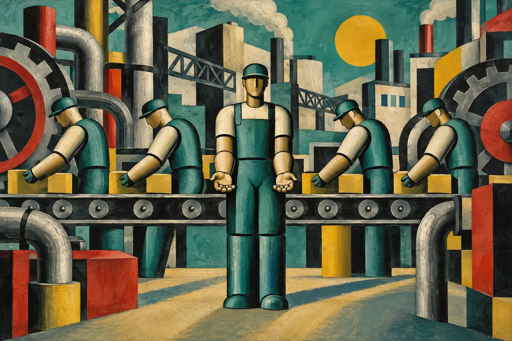

What are we for?

Image info
For most of human history, working was not a choice but a condition. We worked to eat, to stay warm, to avoid dying. Then work became identity too: the first question we ask a stranger is almost always “what do you do?”, as if the answer held the essence of the person in front of us.
Today, for the first time, we can seriously imagine a world in which a huge part of work will no longer be necessary. Not because we will have stopped producing, but because it will mostly be machines that produce. Automation, robotics and artificial intelligence do not replace only physical effort: they are beginning to take on activities we believed exclusively human, writing, analysing, designing, even deciding.
The question then stops being “how will we produce enough?” and becomes another, far more uncomfortable one: “who will we be, when producing is no longer our main task?”
It is a frightening question, because we have built almost everything around work. The time of our days, the value we attribute to ourselves, the respect we receive, the very structure of society. Removing work from the centre of life does not just mean changing the economy: it means reopening the question of how we give meaning to existence.
It helps to distinguish three things we usually confuse. There is the job, the exchange of time for money. There is work, the effort to transform the world and solve problems. And there is vocation, the activity we feel is ours, that seems worthwhile even when no one pays us. Machines can erase most of the first, reduce the second, but have no power over the third, except the power we grant them.
The greatest risk is not idleness. It is emptiness. A society that has learned to tie dignity, identity and income exclusively to employment, when employment grows scarce, risks producing not free people but lost ones. People convinced they are of no use anymore, simply because no one pays for their time.
This is why universal basic income, so much discussed, is a necessary but partial answer. It can solve the economic problem: making sure no one is left without means when machines absorb work. But it does not solve the existential one. Receiving money is not enough to feel useful. Money buys time, not meaning.
The ancients, who founded everything on the work of slaves, had intuited something. They called “leisure” not inertia, but time freed from necessity: the time in which a human being could think, study, cultivate relationships, tend to the city. Work served to survive; leisure served to live. Our problem is that we have an entire civilisation able to produce leisure for everyone, and no culture ready to fill it.
Because free time, on its own, is not meaning. It can become boredom, addiction, endless distraction. A world that frees billions of hours and offers nothing worth spending them on risks filling them with consumption: screens, purchases, entertainment designed never to end. The same technology that frees us from work can turn us into passive consumers of the time it has given us.
And yet there are things that machines, however powerful, cannot do in our place. They cannot love for us. They cannot raise our children, care for a sick friend, listen to those who suffer, build a community, take on a moral responsibility. They cannot give meaning: they can only execute. Meaning remains a human task, perhaps the only one that will truly stay ours.
The future will no longer ask us, as it once did, to be productive. It will ask something harder: to be present. To choose what to devote a time that will finally not be imposed on us. To care, to create, to learn, to be with others not because it pays, but because it matters.
And here lies the real fork in the road. A world without necessary work can become the greatest space of freedom ever to exist, or the largest expanse of boredom and dependence in history. The difference will not be made by machines. We will make it, with the education we give, the communities we build, the idea of the human being we decide to defend.
Perhaps one day we will stop asking a stranger “what do you do?” and learn to ask “what do you care for?”, “what are you learning?”, “what are you creating?”
Because when machines do most of the work, the question will no longer be whether we are still useful.
It will be: will we still be able to give meaning to our days, when no one asks us to anymore?